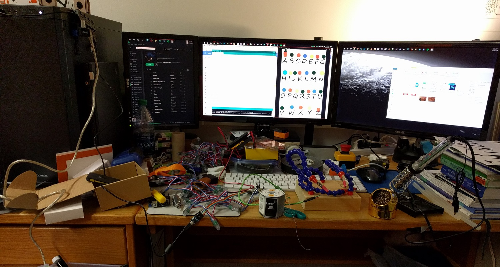

Spencer Kulbacki
Engineer | Student | Electronics Hobbyist
It's my 3rd year at RIT and on Computer Science House.
I'm looking for a Summer 2017 Co-Op/Internship in the area of Electrical/Emedded Systems Engineering.
Have a job I might like? Take a look at my resume; send me an e-mail to get in touch!
View my Résumé
My latest project is featured below. For some of my other work, check out the Projects page.
Stranger Things Alphabet Wall Halloween Costume

{kind=link}
{kind=link}
First off, if you haven't seen Stranger Things, go watch it right now.
This thrilling Netflix-original drama stars Winona Ryder as Joyce Byers, who lives in a small Indiana town in 1983 -- inspired by a time when tales of science fiction captivated audiences. When Joyce's 12-year-old son, Will, goes missing, she launches a terrifying investigation into his disappearance with local authorities. As they search for answers, they unravel a series of extraordinary mysteries involving secret government experiments, unnerving supernatural forces, and a very unusual little girl.
II always like my Halloween costumes to be something memorable and (preferably) electronic. This year was no exception. I started with the idea to make a costume like the "Alphabet Wall" from 'Stranger Things’; I wanted it to have the ability to receive messages from the internet or a Bluetooth keyboard that was paired to the controller. When that turned out to be unachievable due to time constraints I opted for a less complicated setup that involved a finite list of messages that are selected randomly from a list.

I purchased a string of WS2811 12mm RGB LEDs I found on Amazon. The set I chose was round 5v version that contained 50 LEDs that could be cut anywhere to end the string. I used the round style because I planned to insert them into the 'bulb' of a standard C9 Christmas light set. There are several different sizes of the stereotypical Christmas light set, ranging from C3 to c9. The set that worked for me was an LED C9 set with removable bulb covers that I could blue over the LEDs from my WS2811 strip.
Because the LED strip runs on 5v, I was able to power the entire setup from a USB battery bank that is more commonly used to charge your phone. The LED strip has three connections: +5v, GND, DataIn. The power for each LED is always applied, that meant that the Arduino does not have to source any current. A simple Arduino Pro Mini was more than capable enough to handle the code to switch between the different messages and blink the lights.
The LED string works by taking in a serial chunk of bits at LED 0 and then shifting the rest of the data down the line so that by the time you reach the last LED there is no more data. This proves to be a very elegant and quick way to control each LED individually with only a single wire connected to the Arduino.
{kind=link}
The source material for this project is available on my github page, here is a link to the code for this project.
The code behind all this is a set of two case statements, one for the messages, and one for the letter/colors on the shirt.
To display a message the code generates a random number from 1 to 28 (there are 28 messages) and then sets the message array for that case as the current message.
Then a for loop iterates through the message letter by letter, copying each one into a single character array that matches to the second case (this one has 28 cases, A-Z, space, and end) and then goes back to the for loop to get another letter. When a message letter is matched to the second case statement it triggers the lights on the shirt to flash the matching led to the correct color.
The second case needed more than the 26 letters of the alphabet because I needed a way to separate the letters in each word, and each word from the others in the message. This allows for messages that have multiple words that are separate (although I found that longer messages are much harder to decipher by passers by when looking at my costume).
{kind=link}

In the left photo you can see the internal wiring of the shirt. The letter 'A' is in the top right of the photo, and where the connection from the Arduino meets the LED strip. On the right you see a map of the LED numbers as they appear from the outside of the shirt. LED 0 is the letter 'A' and it counts up until you reach the end of the line.
Normally when reading you go to the next line and start at the left again, in this case that's not possible. If you look back the left photo you can see the wiring goes down and then back to the right of the shirt. This is like when reading you get to the end of a line, you go one line down right below the end, and read from left to right; zig-zagging your way down the page without jumping back to the start of each line.
While this makes for much cleaner wiring, it complicates the code needed to display the messages. This is why I had to create the chart you see on the right where each letter of the alphabet has a number, and not all of them are in order, AND some numbers are missing. If you look closely at the wiring photo on the left you can see there is a taped over LED in-between each row. I had to do this because the space between each LED wasn't long enough to make the jump down a row, so I had to skip an LED.
Because I am an Electrical Engineering Technology major, I want to talk about how awesome Arduino Pro Minis are. This whole project is run by that little blue rectangle you see on the breadboard in the bottom of the photo on the left. The Pro Mini is a low power miniaturized version of everyone's favorite microcontroller, the Arduino. It allows for projects like this where I put the battery pack and all the necessary control circuitry in by pants pocket; and how I was able to run it day off a simple off-the-shelf 5v phone battery pack.
Lastly, I want to share that all the source material, including templates, the code, and Amazon links to just about everything I used in this project is available in the readme on my GitHub and can be viewed here.
As always, if you have any questions feel free to reach out to me using the e-mail here.